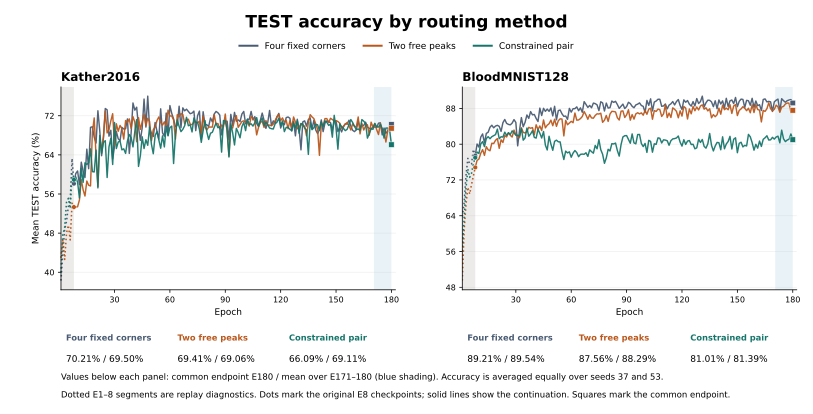
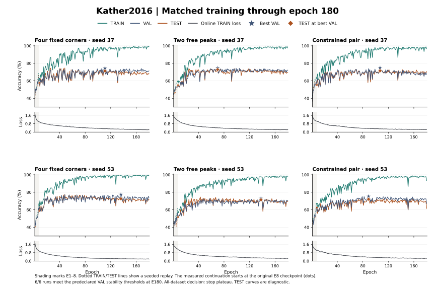
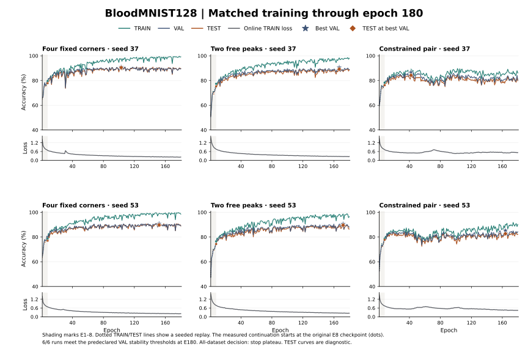

两个数据集，三种路由，配对种子 37 和 53。实验室服务器共同完成第 180 轮， 12/12 组达到预设验证准确率平台标准。每个数据集内三种路由使用相同的样本顺序、更新次数和学习率。
| 数据集 | 路由 | 末轮 TRAIN | 末轮 VAL | 末轮 TEST | 末 10 轮平均 TEST | 最佳 VAL 权重的 TEST |
|---|---|---|---|---|---|---|
| Kather2016 | 四区域 | 98.93% | 72.81% | 70.21% | 69.50% | 71.94% |
| Kather2016 | 原连续 | 97.93% | 71.21% | 69.41% | 69.06% | 72.14% |
| Kather2016 | 加约束连续 | 94.97% | 67.29% | 66.09% | 69.11% | 71.81% |
| BloodMNIST128 | 四区域 | 98.84% | 89.31% | 89.21% | 89.54% | 90.09% |
| BloodMNIST128 | 原连续 | 97.25% | 88.52% | 87.56% | 88.29% | 89.39% |
| BloodMNIST128 | 加约束连续 | 88.14% | 82.30% | 81.01% | 81.39% | 83.47% |
百分比是两个种子的等权平均。按完整 VAL 正确数选权重，同分时取交叉熵更小、轮次更早者。测试集用于逐轮观察和最终比较。



逐轮图中绿色为 TRAIN，蓝色为 VAL，橙色为 TEST，下方为训练损失。前 8 轮的 TRAIN 和 TEST 点线取自单独回放，第 8 轮锚点来自原权重，第 9 轮起为实际续训记录。
两个原测试划分在此前 T17 开发中已有暴露。Blood 的原始划分中有 5 个相同像素哈希跨 TRAIN 与 TEST、1 个跨 VAL 与 TEST。本轮沿用固定划分，两个种子共用相同测试样本。